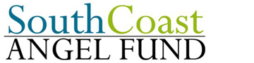
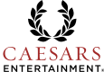

Consulting Projects
The Lens
The Lens is a non-profit investigative journalism outlet that strives to provide in-depth reporting on topics important to New Orleans. Its website is at www.thelensnola.org.
ABB Group
ABB Group leads the way in power and automation technology, helping utilities lessen their environmental impact and boost performance. ABB is active in about 100 countries and reported $40 billion in global revenue in 2011. Learn more at www.abb.com.
Be Well
Be Well Nutrition is a new start-up that is launching a “non-carbonated beverage that offers a convenient, nutritional alternative” for people without time for a full meal. The drink, called Iconic, is fortified with protein and vitamins and promises to satisfy hunger, provide health energy and increase focus and alertness, and with all-natural ingredients. Learn more at http://www.drinkiconic.com
City of New Orleans
The city wants to eliminate inefficiencies and establish a parking-management plan. It also wants to explore the potential creation of a parking authority. Ultimately, the FCG aims to give the city a set of well-researched set of options and a recommendation as to which options they should pursue, backed up by financial projections.
Mayor's Office of Cultural Economy
The Freeman Consulting Group team will assist the Mayor's Office of Cultural Economy with outlining and potentially helping to streamline the process for application and reception of state tax credits for Live Performance productions. While the movie industry and large film production space has grown rapidly through the frequent use of the Film Tax credit program, only one known Live Production (Addams Family) has qualified, applied and received the tax credits, and the process took nearly 10 months.
Offshore Inland
Offshore Inland (OI) is an oilfield and marine contracting services provider that designs, fabricates and installs rig and ship upgrades and repairs. They currently have five US locations: Port Fourchon, Galveston, Mobile and Pensacola. The project will focus on their two newest locations, Pensacola and Galveston, and will include a feasibility study and strategic plan for each.
Robinson Lumber
Robinson Lumber is a locally owned lumber supplier that practices sustainable forest management while provider top-quality tropical wood. The FCG will help Robinson Lumber by measuring customers' and employees' perceptions of the firm and recommending ways to improve satisfaction among both.
South Coast Angel Fund

South Coast Angel Fund is a member-managed venture-capital fund that invests primarily in the Gulf Coast region. The Freeman Consulting Group team will assist South Coast Angel Fund by exploring alternative methods of reporting key financial and operational metrics from firms in which South Coast has invested.
Audubon Nature Institute
The New Orleans-based Audubon Nature Institute is a group of nature-oriented parks including the Audubon Zoo and the Aquarium of the Americas. The Institute has a set of 65 positions consisting of hundreds of employees. Audubon stresses the importance of the satisfaction of their employees because they believe it is their responsibility to ensure that every person that passes through one of their turnstiles has an enjoyable experience.
In their most recent annual survey of employees, the Institute found that a sizeable majority of their employees were dissatisfied with their level of compensation, despite the fact that the Institute was paying salaries above the industry average for most positions. The problem presented to us was two-fold; First, to confirm the belief that employees were paid above the industry average, and second, to find a way for the Institute to address this dissatisfaction.
Bioceptive
Bioceptive is a women's health medical device start-up in New Orleans,Louisiana. The company is currently developing a vacuum tenaculum platform and IUD inserter, which "vastly simplifies the insertion procedure while significantly reducing the adverse events inherent with current insertion techniques." Their product is patent-pending and is still in the developmental and preclinical testing phase.
Brio Fitness
Brio Fitness exemplifies the idea healthy and safe fitness no matter what mode of activity best fits you. Brio offers diverse training programs in sports-specific training, yoga and Pilates, TRX training, and boot camps for all age groups, but needs a marketing plan to grow their customer base and expand the recognition of the brand new Brio Fitness name. Their existing clients are made up of 50% high school athletes, 25% 40-50 year olds (the "executive clients"), and 25% from the baby boomer population. Most of their existing members come as referrals from doctors to their Baudry therapy center and stay for personal training through Brio, both services being offered on site.
Carnival Krewes
This project is the first step in a three part project in which the Freeman Consulting Group will assist the Carnival Krewes by creating an economic impact study for Mardi Gras. The Freeman Consulting Group team will assist the client by exploring alternative methods of determining the impact on the GDP of New Orleans that can be attributed to Mardi Gras, evaluating areas of economic impact in the city and create the processes through which this information can be obtained.
The FCG team will read and evaluate previous studies conducted, research the industries impacted by Mardi Gras, evaluate the potential of determining the loss of productivity during Mardi Gras and use this information to create the process in which the economic data can be ascertained in the Spring.
Carollton Group
Carrollton is a vertically-integrated technology services company specializing in “dirt to development” services across a variety of industries. From physical development of land to installation of sophisticated hardware to implementation and development of the software needed to operate, Carrollton Group provides high technology end-to-end solutions for customers across a variety of sectors. While the company has experienced robust growth over the last two years and is on track to experience even more in the future, much of this growth has come from the construction, enterprise, and tower/carrier units, with the software development unit remaining comparatively stagnant.
An analysis of the software development industry shows that demand for highly specialized solutions remains high but competition in the field is even higher. In order to grow, Carrollton Group may need to pivot its existing strategy and possibly even add a few more services to its portfolio in order to differentiate itself. As consumer demands for tailored solutions collide with increasing commoditization of software programming, Carrollton's software development BU must clearly outline its core strengths and focus on developing those in order to prosper.
Chapter Spot
Since 2009, Founders Brendan Finke, 25, and Joe McMenemon, 27 have organically grown a business concept from back-of-the-napkin-hobby to a financially stable and spunky startup. With projected operating revenues in excess of $1mm for FY2014 and a malleable proprietary technology platform the company is poised for rapid growth or acquisition. The ChapterSpot database management and web applet tools, while originally designed as a tool for college Greek-life organizations, is an adaptable tool that provides dynamic membership management system. The essential design of the website and DB system has always been to seamlessly connect the membership of an organization in today's increasingly connected and diverse digital landscape. As Finke and McMenemon work to continually improve the client base, there now exists a need to determine the best steps forward for this expanding company.
Christ Episcopal School
For twenty-five years, Christ Episcopal School has sought to live out its mission with a humble earnestness of purpose. Throughout that time our campus has continued to develop into an environment where each person's uniqueness is intrinsically valued. We seek to remember and act upon the definitive belief that each child manifests God's creative love passing through the prism of the parents, and refracts a new manifestation of "God in the World." Therefore each student is a wonder; "called by name." God called each of our children by name before we knew they were ours. So, we seek not to manage but guide them through wisdom, opportunity, encouragement and, yes, mandates to progress through recognized developmental goals on the intellectual, spiritual, moral, social, and physical planes.
Crescent City Connections
Crescent City Connections (CCC) is New Orleans' one and only volunteer management organization. We are a local nonprofit organization that customizes volunteer experiences for your group. We give you a one-of-a-kind experience while provididng local community and cultural organizations greater support and access to resources. This creates not only a memorable and lasting impact on your group, but for the Crescent City as well!
The project is based off of the Lean Start-Up project and will work closely with the CCC leadership team. The overall mission of the project is to determine CCC's target market, customer segments, and to create a minimum viable product and sales strategy for these segments. This will require a good mixture of customer research, analysis, synthesis, and creativity.
Grove Transit
Grove Transit was founded in 2010 to meet the growing need for non-emergency medical transportation. The company is based out of Hattiesburg, MI, where the rapidly growing senior citizen population and the presence of world-class medical facilities presented a unique opportunity to provide transportation services.
Since opening three years ago, Grove Transit has grown from a small company with 20 vehicles completing 75 trips per day to one of the largest private non-emergency transportation companies in Mississippi. Grove Transit now has over 75 vehicles and completes over 500 trips a day.
Grove Transit currently has locations in Picayune, McComb, Laurel, Magee, and Waynesboro (all in Mississippi). Over 85 employees compose the company's team of individuals experienced in providing non-emergency transportation. The company's owner, Dan Reid, has over thirty years of experience assisting young companies and management teams. He remains interested in expanding the scope of Grove Transit’s services to encompass much of the Southeast.
Harrah's - Fulton Street Marketing

Serving as the main entertainment promenade during the 1984 World's Fair, Fulton Street has recently been revitalized to become one of the city's great entertainment destinations. From chic restaurants to retail establishments and cozy music clubs, the one block long pedestrian-only Fulton Street Mall offers visitors an exciting night out on the town.
Fulton Street has a number of options for diners. Grab a freshly-brewed beer with Ahi tuna or barbecued salmon at Gordon Biersch. Sample some Oyster Rockerfeller and enjoy crab claws or barbecue quail at Grand Isle where the seafood comes right to the table from the waters of the Gulf of Mexico without touching the freezer. Or, savor a succulent steak seared to perfection at 1800 degrees at Ruth's Chris Steak House.
Fulton Street is home to the 25,000-square-foot Fulton Square, an outdoor event space that plays host to block parties, concerts and special events. In December, Fulton Street dresses in its finest holiday décor with Christmas trees, lights, mistletoes and fleur de lis ornaments for the annual "Miracle on Fulton Street."
There is artificial snow, strolling costumed characters, local musical acts and holiday-themed dining. The New Orleans Seafood Festival brings live music, fried seafood and family fun to Fulton Square in October.
Harrah's - Valet Service
Harrah's Casino is part of Caesars Entertainment Corporation which is the "world's largest and most geographically diversified casino-entertainment company". Caesar's was founded over 75 years ago in Reno, Nevada and through acquisitions and expansion has grown leaps and bounds and in addition to its large domestic operations has a casino presents on 3 other continents.
Harrah's New Orleans had significant issues prior to finishing up construction due to flooding and the changing trends in the gaming industry but finally opened its doors in the French Quarter in October of 1999. In the wake of Hurricane Katrina the casino was closed for six months but reopened and has been successful since.
Until recently Harrah's Casino's Valet service had been outsourced and operated by a third party. It is currently being run by the same team who had established the Hotel Valet service, which is separate, and has made it into a top quality valet parking operation. This team is headed up by Brad Weissman, Director of Hotel opperations and his supporting staff of Cody Yates, Alexander Abbyad and Mario Mantufar who have all been instrumental in implementing change and improving the current service and operational issues with the currently flawed system.
Jefferson Parish
Jefferson Parish Louisiana was established in 1825 and was named in honor of Thomas Jefferson commemorating his role in purchasing the Louisiana territory from France in 1803. The Parish originally extended from present day Felicity Street in New Orleans Louisiana to the St. Charles Parish line. As Orleans Parish grew it annexed from Jefferson Parish such established areas as the Garden District Lafayette Jefferson and Carrollton. The present boundary was set in 1874 and the seat of Parish government was transferred to the West Bank Gretna where it has remained.
Louisiana Public Health Institute
The project is working with the Louisiana Public Health Institute (LPHI) and the Greater New Orleans Health Information Exchange (GNOHIE) that they developed through the Beacon Grant given by the Federal Government. The main deliverables of the project include: How to keep the GNOHIE sustainable and turn it into a profitable component of the business.
Recovery School District - Overall Financial Model
As the Recovery School District (RSD) completes its evolution from a direct-operator of schools to the governor of systems of independent charter schools, we must address some key financial and organizational challenges. This project focuses on building a financial model that can be used to evaluate the sustainability of the RSD. The goal of this project is to make a recommendation to RSD/LDE regarding sustainability, while supporting the recommendation with a dynamic model (inputs/assumptions that can be varied).
Recovery School District - Student Funding Formula for Students with Disabilities
As the Recovery School District (RSD) completes its evolution from a direct-operator of schools to the governor of systems of independent charter schools, we must address some key financial and organizational challenges. This project involves supporting the RSD/LDE in improving the differentiated student funding formula based on student needs and characteristics. Unlike most school districts, the RSD has a special formula that gives substantially more funding to students with certain disabilities. The RSD needs to do considerable research to determine how we might broaden or improve our formula. This will involve significant cost analyses and research into practices in other locations.
Tulane Natural Primate Research Center
The Tulane National Primate Research Center (TNPRC) is one of the largest of eight National Primate Research Centers in the country, housing about 5,000 primates on a 500-acre campus on the Northshore. The Center has more than 300 employees, including 35 doctoral level scientists and clinical veterinarians, and about 200,000sf of research space. As part of the National Primate Research Center Program, TNPRC is largely supported by federal grants through the National Institutes of Health (NIH). We are interested in exploring new business development strategies and expanding our current business model to bring in additional funding from the private sector.
The research program at the TNPRC has focused heavily on infectious disease research for more than three decades. The major areas of funding in this program are currently AIDS, Lyme disease, tuberculosis and vaccines and mechanisms to protect against bioterrorism. These are multidisciplinary studies involving investigators in several Divisions at the TNPRC and collaborators outside the Center. Common to these studies is a focus on disease origination and progression and on using such research findings to develop vaccines, diagnostics and therapeutics to treat these diseases. Discoveries utilizing the in-house research expertise at the TNPRC have led to diagnostics tests approved by USDA and the FDA for commercial sale, as well as numerous human clinical trials of vaccines and therapeutics. Although the majority of the Center’s research efforts are devoted to infectious disease, a significant program in regenerative medicine has also developed which is closely linked to the Center for Stem Cell Research and Regenerative Medicine at Tulane. This research is focused on developing new therapies for diseases including osteoporosis, Parkinson's disease, spinal injuries, diabetes and Alzheimer's.
To date, federal grant funding has made up more than 90% of the Center's $30M annual budget. We now wish to expand our business model beyond this grant support by developing public private partnerships and business relationships to utilize our expertise and experiences in pre- clinical research to further our mission to improve human and animal health. In the process, we hope to make a greater contribution to the development of products that treat disease as well as to further economic development in the region. The proposed project would be a strategic analysis of opportunities to expand the Center's current business model with services the private sector would consider funding.